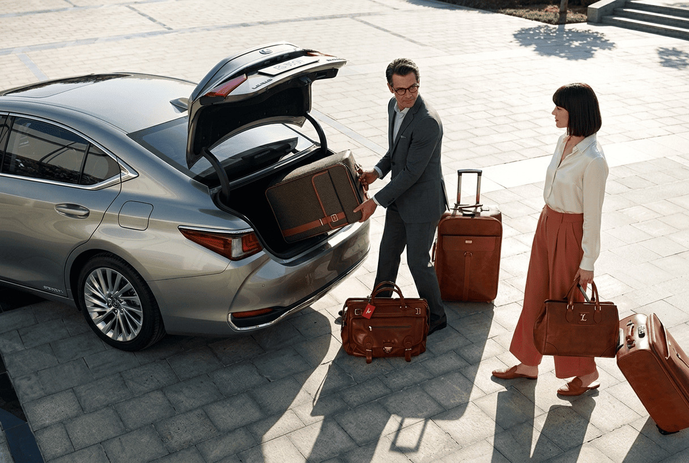
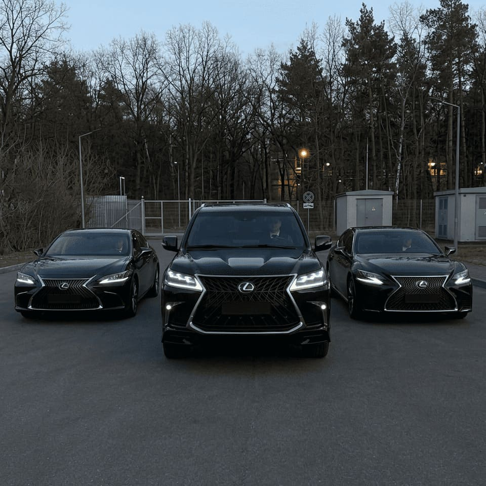

Трансфер Одесса - Киев и Киев - Одесса
Индивидуальный трансфер Одесса - Киев и Киев - Одесса это удобный формат поездки для тех, кому важны комфорт, понятные условия и возможность заранее согласовать детали маршрута.
Такой вариант может подойти для личных, семейных, деловых и сезонных поездок по Украине. Итоговая стоимость зависит от класса автомобиля, количества пассажиров, багажа, времени выезда и дополнительных условий поездки.
StepRoyal помогает организовать поездку в более спокойном и предсказуемом формате, чтобы вы заранее понимали основные условия и могли выбрать вариант трансфера под свои задачи.
- Индивидуальная поездка без случайных попутчиков
- Удобно для маршрута между городами Украины
- Подходит для поездок с багажом
- Можно подобрать подходящий класс автомобиля
- Точная цена уточняется до бронирования
Перейдите к тарифам, чтобы посмотреть ориентировочные цены, или откройте контакты, чтобы получить точный расчет на нужную дату, направление и класс автомобиля.
Индивидуальный трансфер между Одессой и Киевом
Этот маршрут актуален для пассажиров, которым нужен более прямой и комфортный вариант поездки, чем стандартные пересадки и сложные комбинации транспорта. Индивидуальный трансфер помогает проще спланировать дорогу, особенно если важны комфорт, багаж и график.
При необходимости можно заранее согласовать не только поездку из Кишинева в Днепр, но и обратный трансфер на удобную дату. Это особенно удобно, если нужно сразу спланировать дорогу в обе стороны.
Почему этот маршрут удобен
- Гибкие условия и согласование маршрута заранее
- Понятные условия поездки до выезда
- Подходит для личных и деловых поездок
- Удобно для пассажиров с багажом
- Проще планировать длинную межгородскую поездку

Что влияет на цену
Итоговая стоимость трансфера обычно зависит от класса автомобиля, количества пассажиров, багажа, времени выезда и дополнительных условий маршрута.
Почему выбирают такой трансфер
Индивидуальный трансфер выбирают не только из-за комфорта, но и из-за более простой организации поездки, понятного планирования и возможности заранее обсудить детали.
Понятная логика цены
Ориентировочные цены можно посмотреть заранее, а точная стоимость уточняется до бронирования с учетом деталей поездки.
Гибкое планирование
Можно заранее обсудить направление, время выезда, класс автомобиля, количество пассажиров и багаж.
Более комфортный формат
Индивидуальная поездка подходит тем, кто хочет более спокойную и прямую дорогу без лишних неудобств.
Удобно для поездки в обе стороны
При необходимости можно заранее согласовать не только основной маршрут, но и обратную поездку, чтобы заранее спланировать всю дорогу.
Часто задаваемые вопросы
Ответы на популярные вопросы о трансфере Одесса - Киев и Киев - Одесса.